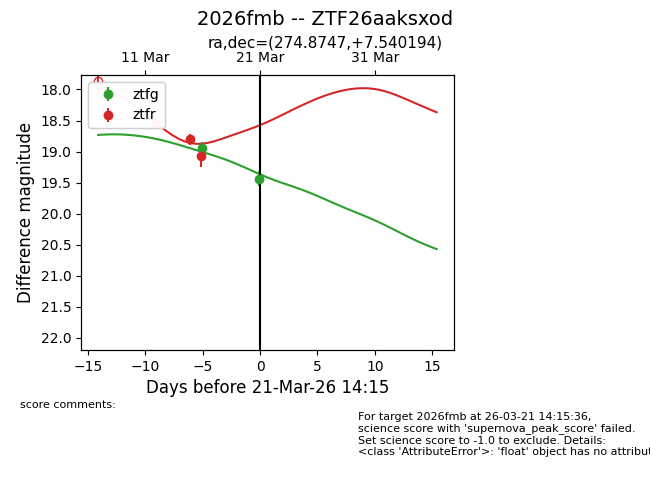
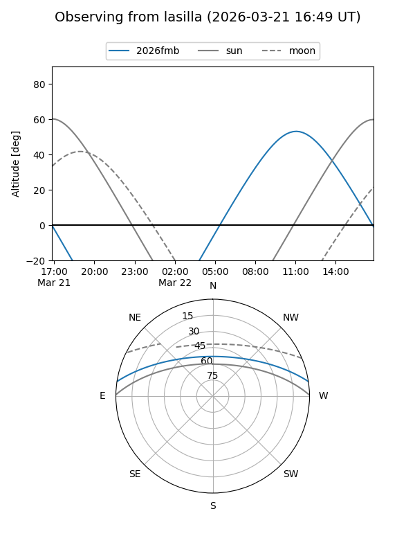
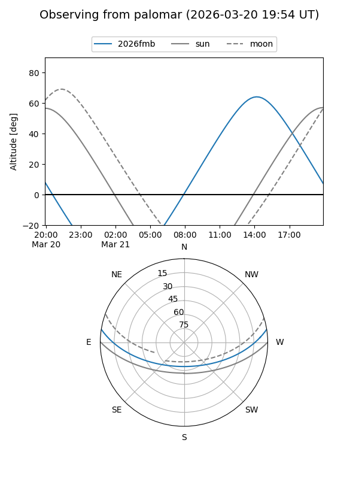
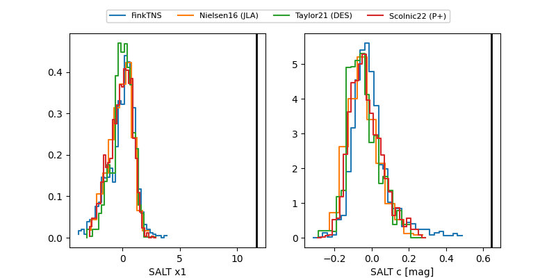

2026fmb
Target 2026fmb at 2026-03-21 14:17
Aliases and brokers:
FINK: link
Lasair: link
ALeRCE: link
TNS: link
YSE: link
alt names
ZTF26aaksxod (ztf,fink_ztf)
2026fmb (tns,yse)
Coordinates:
equatorial (ra, dec) = 274.8747,+7.54019
equatorial (HMS+DMS) = 18:19:29.94,+07:32:24.70
galactic (l, b) = (36.0799,+10.50921)
Flags:
Photometry:
last ztfg=19.44, ztfr=19.06
2 ztfg, 3 ztfr detections
Lightcurve

Visibility


Additional plots
